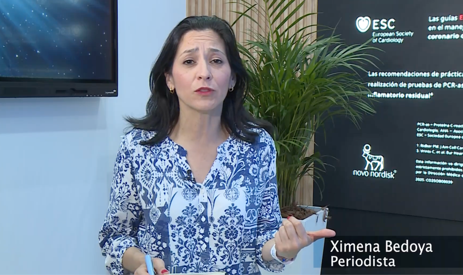
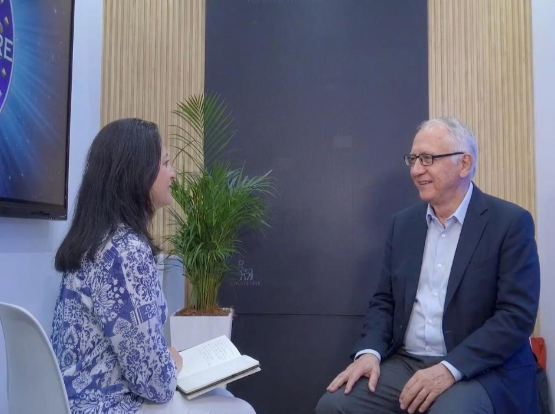
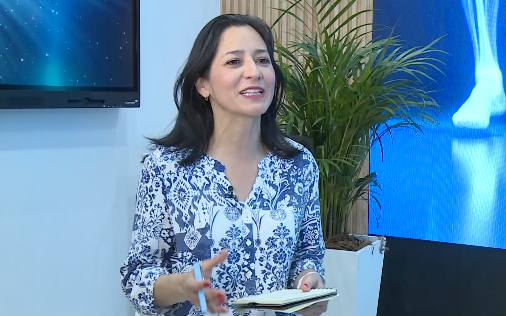
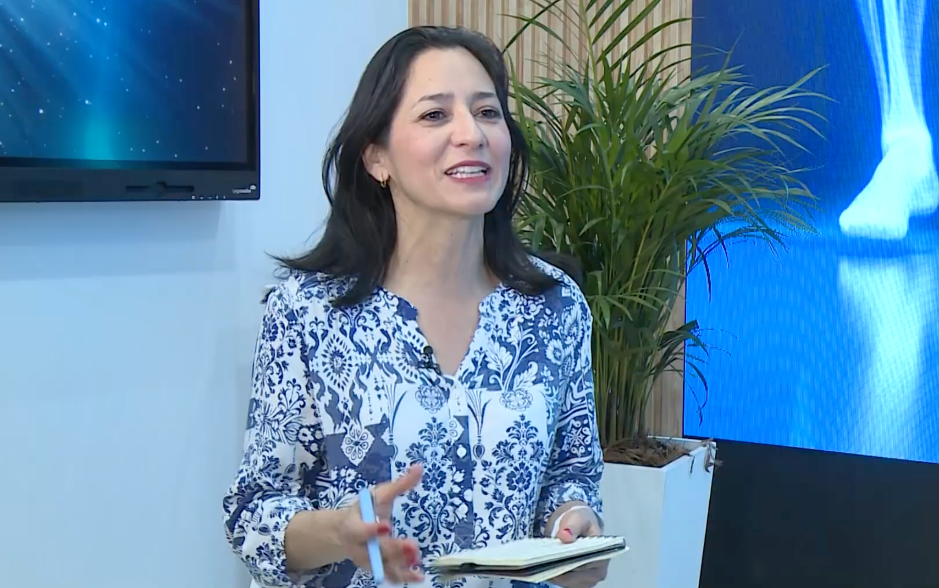
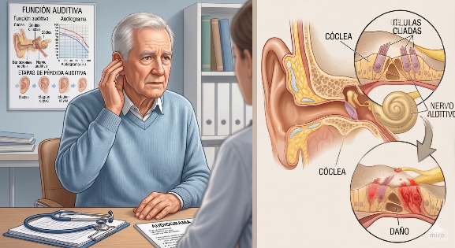
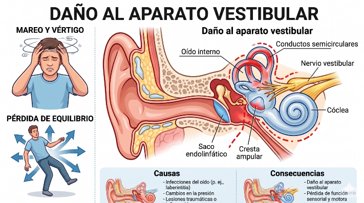
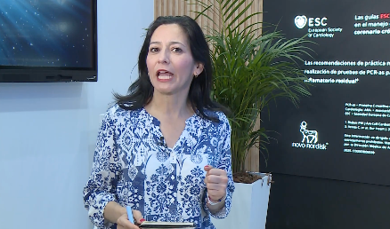
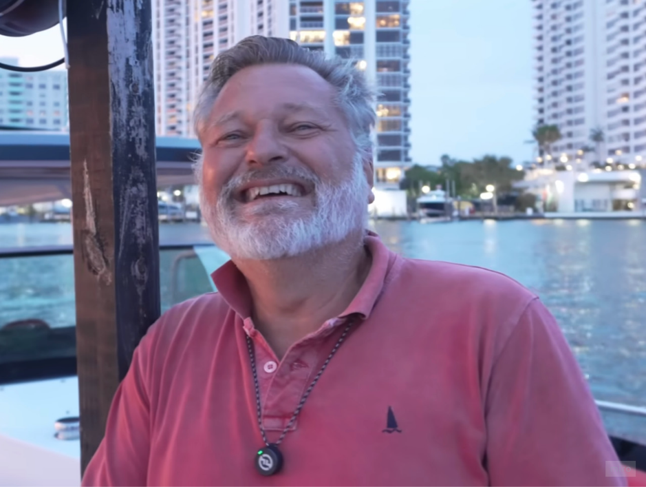
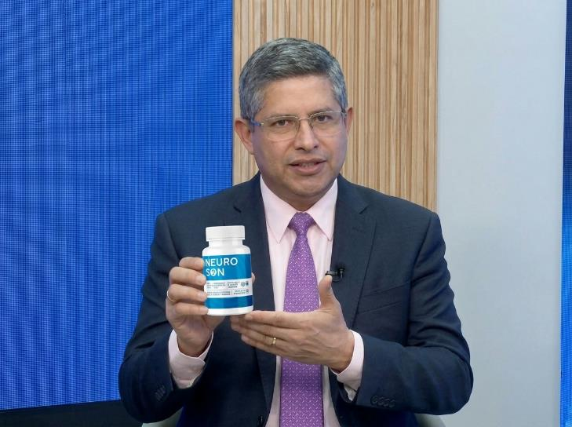
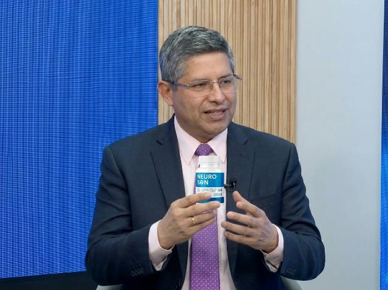

LA PÉRDIDA AUDITIVA Y EL TINNITUS DESTRUYEN SILENCIOSAMENTE EL SISTEMA AUDITIVO Y PROVOCAN SORDERA TOTAL EN EL 98,72% DE LOS CASOS. EL DR. RICARDO SILVA DESARROLLÓ UN MÉTODO NATURAL QUE RESTAURA LA AUDICIÓN EN SOLO 10 DÍAS.
ADVERTENCIA DEL MINISTRO DE SALUD
Hace unos días recibimos una solicitud oficial para retirar este material de una gran empresa colombiana de audífonos. Lo ignoramos.
Ministro de Salud Guillermo Alfonso Jaramillo emitió un comunicado crítico sobre el escándalo en la industria colombiana de audífonos.
Dr. Ricardo Silva Rueda, especialista en audición con 23 años de experiencia, ha desarrollado un método sencillo y natural que revierte la pérdida auditiva crónica en 10 días y tinnitus sin la necesidad de usar costosos audífonos, cirugías y procedimientos interminables durante toda la vida.
Dos días después, intentaron bloquear su material tres veces. La fuente de las solicitudes es el departamento jurídico de una de las mayores empresas fabricantes de audífonos en Bogotá.
Ximena Bedoya realizó una entrevista única al Dr. Ricardo Silva Rueda y el Ministro Guillermo Alfonso Jaramillo.
Léalo hasta el final para conocer el método exacto para deshacerse de la pérdida auditiva y el tinnitus en 10 días.

Ximena Bedoya (presentadora del programa “Salud y Vida”, radio RCN):

Buenas tardes, Dr. Guillermo Alfonso Jaramillo. Gracias por tomarse el tiempo de hablar con nosotros. Sé que usted ha hecho algunas declaraciones muy críticas esta semana sobre el estado de la industria de audífonos en Colombia. Cuéntenos qué le preocupa tanto.
Guillermo Alfonso Jaramillo (Ministro de Salud y Protección Social de Colombia):
Gracias Ximena. Este es un tema que me ha estado persiguiendo durante los últimos meses. Seamos completamente honestos: en Colombia el mercado de audífonos vale más de 450 mil millones de pesos al año. Esta es una industria enorme. Y el principal problema es que a esta industria no le interesa la salud de los ciudadanos colombianos, sino el lucro.
Ximena Bedoya:
¿A qué se refiere con eso?
Guillermo Alfonso Jaramillo:
Me refiero a matemáticas simples. Una persona con pérdida auditiva aporta entre 18 y 32 millones de pesos al año para una empresa de cuidados auditivos. De por vida. Imagínese: audífonos caros: de 12 a 25 millones de pesos el par. Baterías - 500 mil pesos mensuales. Visitas a un especialista, ajustes, mantenimiento: millones más.
¿Y crees que es beneficioso que te curen? Un cliente con pérdida auditiva es una mina de oro que genera ingresos no sólo durante un año, ni dos, sino décadas.
Vi esto de primera mano. He visto gente en Bogotá, en Medellín, en Barranquilla, en Cali, con desesperación en sus ojos, compran audífonos pensando que esa es la solución. Y esta no es una solución. Es una trampa.
Ximena Bedoya:
¿Estás hablando de una "trampa"?
Guillermo Alfonso Jaramillo:
Absolutamente correcto. La trampa funciona así: una persona descubre que tiene pérdida de audición - va al médico - el médico le recomienda un audífono - la persona compra el dispositivo por mucho dinero - los primeros meses le parecen mejores - luego su audición comienza a disminuir nuevamente - el médico dice "necesitamos un dispositivo más potente" - la persona vuelve a pagar millones.
El ciclo se repite hasta que la persona permanece completamente en silencio o se arruina. Esto es un derramamiento de sangre financiero.
En mis veinte años de trabajo en el sector sanitario, he visto suficiente. Vi cómo las personas mayores en Bogotá derrochan dinero en audífonos. He visto cómo jóvenes de entre 45 y 50 años se enfrentan a una pérdida auditiva crítica. He visto familias elegir entre comprar medicamentos o pilas para sus audífonos.
¿Y sabes qué es lo peor? Nadie les explica el verdadero motivo. Porque si la gente supiera la verdad, la industria colapsaría.
Ximena Bedoya:
¿Estás afirmando que hay alguna verdad oculta?
Guillermo Alfonso Jaramillo:
Absolutamente. La verdadera causa de la pérdida auditiva no es la edad, la herencia o la voluntad de Dios. La verdadera causa es la inflamación crónica de las estructuras auditivas, que bloquea la transmisión normal de las señales sonoras.
Cuando esta inflamación se acumula, perjudica el drenaje linfático del oído. Los nervios auditivos se inflaman y bloquean. Transmiten el sonido con dificultad y distorsión. Y la audiencia disminuye.
Pero en lugar de tratar la inflamación, el sistema recomienda “compensar” el problema con audífonos. Es como si su médico le dijera que simplemente comiera más si tiene el tracto gastrointestinal obstruido. Compensar, no tratar.
Ximena Bedoya:
Esto suena como una conspiración sistémica.
Guillermo Alfonso Jaramillo:
Yo no usaría la palabra "colusión". Es más como un sistema cerrado. A los médicos se les enseña que la pérdida de audición es incurable. Las empresas ganan dinero con esto. Los pacientes creen que esto es normal. Y nadie busca una solución real.
Pero recientemente me enteré de una persona que encontró esta solución. Dr. Ricardo Silva Rueda. Realizó siete años de investigación y desarrolló un método natural que realmente restaura la audición. Y esto me inspiró.
Ximena Bedoya:
¿Se refiere al médico que desarrolló las cápsulas utilizando un método natural?
Guillermo Alfonso Jaramillo:
Exactamente. Y quiero que todo colombiano lo sepa. Porque puede salvar vidas. No sólo físicamente, sino también psicológicamente. La pérdida de audición no es sólo un problema médico. Este es un desastre social.
Ximena Bedoya:
Dr. Ricardo Silva Rueda, buenas tardes, gracias por venir. Sinceramente, el tema de hoy me plantea muchas preguntas, y no sólo profesionales.
Afirma haber desarrollado un método utilizando ingredientes naturales que restaura completamente la audición y elimina el tinnitus crónico en sólo 10 días, permitiendo a una persona oír plenamente, independientemente de su edad (30, 50, 70 o 90 años), todo ello sin audífonos, procedimientos costosos o cirugías.
Nos conocemos desde hace varios años. Usted es un respetado especialista en audición conocido en toda Colombia. ¿Y ahora dices que la pérdida de audición se puede curar con ingredientes naturales?
Esto suena increíble, incluso divertido. Pero si usted lo dice, intentemos descubrir la verdad de usted. Tengo mucho interés en escucharlo todo hasta el final, pero os avisaré con antelación. Voy a hacerte algunas preguntas difíciles porque, en mi opinión, este es sólo otro método en Internet en el que sólo creen las personas desesperadas.
Además, ya ha recibido solicitudes de bloqueo tres veces. Obviamente, las empresas de audífonos no están contentas con sus declaraciones.
Dr. Ricardo, ¿estás intentando iniciar una nueva tendencia en las redes sociales? ¿De verdad estás diciendo que esto es algo nuevo y que funciona?
Dr. Ricardo Silva Rueda (Especialista en audición, audiólogo, otorrinolaringólogo):
¡Buenas tardes Ximena! Sabes, sólo hablo de lo que realmente funciona. Y sí, suena increíble. Pero hace sólo unos días la comunidad científica colombiana confirmó oficialmente que la combinación precisa de ingredientes naturales -miel, propóleo y otros siete ingredientes- es 47 veces más potente y eficaz que cualquier método conocido para restaurar la audición y eliminar el tinnitus.
Y lo mejor de este método es que es 100% natural, hipoalergénico y absolutamente puro, más puro que las lágrimas de un bebé.

En cuanto a los intentos de bloquear información, esto sólo confirma que hemos encontrado algo que realmente funciona. Y esto es muy desventajoso para alguien. Pero no tengo miedo. Llevo 23 años trabajando con la audición. He visto demasiado sufrimiento.
Ximena Bedoya:
Mira, tengo que decirlo. Esto suena inusual, por decirlo suavemente. Estás hablando de ingredientes naturales. Lo creería si dijeras que se trata de un nuevo fármaco suizo o de tecnología alemana. Pero estás hablando de cosas que se pueden comprar en cualquier farmacia o mercado de Bogotá. ¿Te das cuenta de lo inusual que suena esto?
Dr. Ricardo Silva Rueda:
Tienes toda la razón. Por eso nunca hablé de ello a la ligera. Me lo guardé para mí durante siete años. Sabía que si hablaba no me creerían y me llamarían charlatán. ¿Pero sabes qué? Estoy cansado de estar en silencio.
Porque en estos siete años he visto sufrir en Bogotá, en Medellín, en Barranquilla. Vi cómo viven con el miedo constante de quedar completamente sordos. Cómo usan audífonos costosos que les irritan los oídos y arruinan su calidad de vida.
Vi a jubilados elegir entre comida y pilas para audífonos. Vi niños que se sentían avergonzados por sus padres con problemas de audición. Vi degradación, soledad, demencia.

Hasta que un día me di cuenta de que el silencio también es un delito.
Ximena Bedoya:
Esto suena duro. Pero déjame preguntarte algo. Si todo esto es cierto ¿por qué no lo vemos en la televisión nacional? ¿Por qué los médicos siguen prescribiendo audífonos y medicamentos para los oídos costosos?
Dr. Ricardo Silva Rueda:
Porque los audífonos son un negocio. Gran negocio. Sólo en Colombia el mercado de audífonos está valorado en más de 450 mil millones de pesos al año. ¿Qué pasa si la gente deja de comprar audífonos? ¿Qué pasa si dejan de ir al médico todos los meses por procedimientos costosos?
Las grandes empresas manufactureras perderán miles de millones. Por eso, están haciendo todo lo posible para evitar que esta información llegue a la televisión. Para que no hablen de ella en los hospitales. Para que los médicos sigan recomendando audífonos.
Cuando encuentras algo que realmente funciona, intentan silenciarte. Tres veces esta semana he recibido amenazas. Tres veces me ofrecieron dinero para que dejara de hablar de este método.
Por eso estoy aquí contigo. Para que la gente común sepa que hay una solución. Que hay una alternativa. Y que no necesita desperdiciar su vida y su dinero en audífonos y procedimientos interminables.
Ximena Bedoya:
Bueno, digamos que lograste atraer mi atención. Honestamente, quiero escuchar esta historia hasta el final. Entonces, si quiero probar este método, ¿qué tiene de especial?
Dr. Ricardo Silva Rueda:
La respuesta es muy sencilla. El método con ingredientes naturales no sólo restaura completamente la audición y elimina la pérdida auditiva, sino que también alivia los tinnitus, los zumbidos, la congestión, la debilidad de la percepción del sonido y minimiza el riesgo de sordera total y otras consecuencias graves. Realmente rejuvenece el sistema auditivo, como si tuvieras 20 años menos.
Imagínate: te despiertas por la mañana en Bogotá y escuchas el canto de los pájaros fuera de la ventana. No se esfuerce por distinguir los sonidos. No puedes adivinar qué es ese ruido. Simplemente escuche cada nota clara y claramente.
Te levantas de la cama y no sientes ningún molesto zumbido en los oídos. No es necesario que sacudas la cabeza para aclarar tus oídos. No es necesario poner el televisor al máximo para escuchar nada.
Habla con sus seres queridos y no les pide que vuelvan a preguntar. No hace falta leer los labios ni adivinar de qué se trata. Miras la televisión con placer y no sufres tratando de entender las palabras de los actores.
Puedes hablar fácilmente por teléfono. Puedes unirte a conversaciones en las bulliciosas cafeterías de Medellín o Cali. Podrás disfrutar de la música durante tres horas seguidas y no tener miedo de no escuchar nada.
Vas al teatro con amigos. Estás teniendo una conversación tranquila en un restaurante. Caminando por el Parque Bolsvara en Bogotá, sin miedo ni pánico de perderse sonidos importantes.
Ya no eres esclavo de la audiometría. No pruebes tu audición cinco veces al mes. No tiembles ante cada decibel. No lleve consigo baterías adicionales "por si acaso". Vives. Viva verdaderamente libre, fácilmente y sin miedo.
Y ya no gastes ni un céntimo en visitas a audiólogos, audífonos y exámenes interminables. Su dinero permanece en la familia y no va a las cestas de las empresas manufactureras.
El efecto se siente inmediatamente y en 24 horas escucharás el mundo de una manera nueva.
Ximénen Bedoya:
¿Hablas en serio? ¿De verdad estás diciendo que todo esto es cierto sobre la restauración de la audición? Tengo toda tu atención.
Dr. Ricardo Silva Rueda:
Sí, y lo más importante que tengo que decirle a todo colombiano es que este método puede salvarle la audición. Y no estoy exagerando. Porque la pérdida de audición y el tinnitus son más que simples molestias o molestias. Son los asesinos silenciosos de su sistema auditivo y de todo su cerebro.
Escuche atentamente. Cuando usted tiene pérdida de audición o tinnitus persistente, sus nervios auditivos están sometidos a un estrés tremendo día tras día. Día tras día, mes tras mes, las células ciliadas mueren, los nervios auditivos pierden conductividad y se cubren de microdaños.
Y ahí es donde empieza lo peor.
Ximena Bedoya:

¿A qué se refiere?
Dr. Ricardo Silva Rueda:
El rumor muere silenciosamente. No sientes un dolor agudo hasta que ocurre una catástrofe. No pierdes la audición al instante. Simplemente se siente cansado, un ligero zumbido en los oídos y quizás un ligero deterioro de la percepción. Pero por dentro, su sistema auditivo se está deteriorando lentamente.
Celda por celda. Nervio tras nervio. Sinapsis tras sinapsis. Y esto es lo que sucede a continuación.
Un buen día, después de 3, tal vez 5 años, el sistema auditivo simplemente no puede soportarlo. Una cantidad crítica de nervios muere. Y entonces comienza la verdadera pesadilla.
Te despiertas en silencio. Silencio completo, profundo e insoportable. Este no es el silencio pacífico de la meditación. Esta es la muerte sónica. No escuchas las voces de tus seres queridos, no escuchas los autos en la calle, no escuchas música.
Permaneces en la oscuridad aunque tus ojos estén abiertos. Te aíslas del mundo.
Ximena Bedoya:
Espera, ¿estás diciendo que la pérdida auditiva normal puede provocar una sordera total?
Dr. Ricardo Silva Rueda:
No sólo puede ser así, sino que la pérdida auditiva en realidad conduce a una sordera total. En el 98,72% de los casos, la pérdida auditiva crónica que no se trata adecuadamente provoca sordera total o daño irreversible de los nervios auditivos. Este es un hecho médico oculto a la gente corriente.
Realicé un estudio con 3.500 colombianos con pérdida auditiva. Y esto es lo que descubrí: el 87% de ellos, si no inician el tratamiento durante el primer año, perderán completamente la audición en un plazo de 5 a 7 años.
¿Y sabes qué sucede cuando aparece la sordera total? Tendrás suerte si puedes compensarlo parcialmente con audífonos. Pero incluso entonces, una de cada dos personas permanece en un sano aislamiento.
Un audífono no es un oído. Este es un amplificador de sonido distorsionado. Cuando se destruye el sistema auditivo, el dispositivo simplemente amplifica el ruido y no proporciona una señal clara.
Esto no es vida, esto es existencia. No escuchas las voces de tus seres queridos. No puedes comunicarte normalmente, no puedes trabajar. No escuchas música ni sonidos de la naturaleza. Quedarse aislado del mundo.
Ximena Bedoya:
¿Cuál es el costo de esto?
Dr. Ricardo Silva Rueda:
El valor monetario es enorme. Cada audífono de calidad cuesta entre 12 y 25 millones de pesos. Esto es una fortuna para un colombiano que gana entre 2 y 3 millones al mes. Multiplique esto por reemplazos cada 5 a 7 años. Esto es un mínimo de 60 a 150 millones de pesos de por vida.
Más baterías: de 400 a 500 mil pesos mensuales. Además de visitas constantes a audiólogos, ajustes, exámenes: millones más al año. Además de un traductor auditivo si eres completamente sordo.
Pero esto no es lo peor.
Ximena Bedoya:
¿Podría ser algo aún peor?
Dr. Ricardo Silva Rueda:
Sí. Porque cuando el sistema auditivo se destruye, arrastra consigo a todo el cuerpo. Comienza una reacción en cadena de destrucción.
El primero es la sordera total.
El nervio auditivo no puede soportar la carga y muere. O gravemente dañado por la constante inflamación y estrés. Las señales dejan de llegar al cerebro.
Las células ciliadas mueren en cuestión de días. El resultado es una sordera total, pérdida de la capacidad de distinguir el habla, los sonidos y un aislamiento total del sonido.

Tres cuartas partes de los adultos colombianos con pérdida auditiva crónica pierden completamente la audición en un plazo de 5 a 7 años. La mitad de ellos permanecen en completo silencio por el resto de sus vidas.
Segundo: daño al aparato vestibular y mareos.
El cerebro trabaja a toda marcha tratando de compensar la pérdida auditiva y descifrar las señales de sonido distorsionadas. Los centros auditivos se desgastan y las conexiones neuronales se degradan.
Aparecen mareos constantes. Pérdida de equilibrio. La persona no puede caminar normalmente y tiene miedo de caerse. Un tercio de las personas con pérdida auditiva avanzada desarrollan problemas vestibulares graves.
Tercero: degradación cognitiva y pérdida de memoria.
El cerebro se cansa del estrés constante, tratando de descifrar sonidos distorsionados. Aparece el olvido constante. Confusión en las palabras. Incapacidad para concentrarse en una conversación. Pérdida de la memoria a corto plazo.
Literalmente pierdes el contacto con el mundo con cada intento de comunicarte. El cerebro se desgasta por el estrés mental.
Cuarto – aislamiento socialIA y depresión
La pérdida de audición altera las conexiones sociales. La persona deja de participar en la comunicación, evita empresas y eventos. El resultado es una depresión profunda, un aislamiento total y la necesidad de apoyo psicológico constante.
He visto gente en Bogotá que ya no sale de sus casas. Que no ven a sus amigos desde hace años. Que comen solos porque no escuchan a su familia. Esto no es vida. Esta es la muerte psicológica.
Quinto: demencia y pérdida de identidad.
Las conexiones neuronales en la corteza auditiva se destruyen por el estrés constante y la falta de estimulación auditiva. El cerebro comienza a morir célula por célula.
Primero aparecen el olvido y la confusión en las palabras. Entonces aparece una demencia irreversible. La enfermedad de Alzheimer se desarrolla tres veces más rápido en personas con pérdida auditiva.
Te estás perdiendo a ti mismo. Literalmente. Día tras día. No recuerdas los nombres de los niños. No reconoces a tu esposa. Conviértete en una carga para la familia.
Y todo esto es el resultado del hecho de que alguna vez no le dio importancia a una discapacidad auditiva "leve". Piénsalo, no puedo escuchar la televisión muy bien. Piensa, a veces vuelvo a preguntar en el trabajo. Subiré el volumen, te pediré que lo repitas, se pasará.

Pero no desaparece. Mi audición continúa deteriorándose. El cerebro se está deteriorando día a día. Y después de 3 a 5 años te despiertas como una persona con demencia. Irreconocible para su familia.
Ximena Bedoya:
Dios mío, esto es terrible. ¿Pero por qué los médicos de Bogotá, en los hospitales, no hablan de esto?
Dr. Ricardo Silva Rueda:
Porque una persona enferma significa dinero. Un colombiano con pérdida auditiva aporta entre 20 y 35 millones de pesos al año al sistema de salud y a los fabricantes de audífonos. De por vida. ¿Crees que es beneficioso que te curen?
Pero ya no puedo permanecer en silencio. Porque vi con mis propios ojos cómo personas que solo tenían entre 45 y 50 años se convertían en personas aisladas del mundo. Vi cómo se sumían en un silencio total... aislados de comunicación, incapaces de escuchar las voces de sus nietos, en constante dependencia de tecnología costosa.
Y todo empezó con una simple discapacidad auditiva. De un “inconveniente” que la gente posterga tratar.
Por eso este método es tan importante. No sólo restaura la audición. Detiene la destrucción de los nervios auditivos. Te salva de la sordera. Literalmente. Y funciona a cualquier edad.
No importa cuán avanzada esté tu pérdida auditiva, tienes 40 o 75 años. Incluso si recién estás comenzando a notar los primeros signos de pérdida auditiva, ahora es el momento de detener la catástrofe.
O si ya tiene pérdida auditiva crónica, aún no es demasiado tarde para salvar su audición, su cerebro y su calidad de vida.
Ximena Bedoya:
Lamento interrumpir, pero usted dijo que esta técnica ayuda con otros problemas: demencia, depresión. ¿Cómo se relaciona esto?
Dr. Ricardo Silva Rueda:
Verá, cuando el sistema auditivo comienza a deteriorarse debido a una inflamación crónica, se lleva consigo a todo el cerebro. El cerebro deja de procesar información normalmente y se desarrolla demencia y deterioro cognitivo.
Y luego el aislamiento social, cuando una persona está completamente desconectada de la comunicación debido a la incapacidad de oír con normalidad.
Pero esa no es la peor parte. Cuando el cerebro carece de estimulación auditiva normal durante años debido a un sistema auditivo dañado, sus conexiones neuronales comienzan a morir.
Al principio te olvidas de las pequeñas cosas: no recuerdas lo que te dijeron, confundes las palabras en una conversación. Entonces no reconocerás las voces de tus amigos. Luego, las voces de los seres queridos. Entonces pierdes por completo la capacidad de comunicarte normalmente.
Esto se llama demencia auditiva: deterioro cognitivo debido a la pérdida de audición. Te estás perdiendo a ti mismo. Literalmente.
El 87% de los casos de demencia en personas mayores de 60 años comienzan con una pérdida auditiva no tratada. Porque el cerebro se deteriora por falta de estimulación auditiva y aislamiento social.
Pero cuando recuperamos la audición y normalizamos la función auditiva mediante este método, detenemos la destrucción de todo el cerebro. El cerebro vuelve a recibir estimulación auditiva completa.
Se restablecen las conexiones neuronales. La función cognitiva se estabilizará naturalmente incluso si tiene signos tempranos de demencia.
Las células cerebrales dejan de morir. La memoria mejora. Vuelve la claridad mental. Volverás a ser tú mismo.
Y cuando el sistema auditivo vuelve a funcionar correctamente, todo el cerebro recibe un nuevo impulso.
El cerebro recibe información sonora completa. Las conexiones neuronales, degradadas durante años por falta de estimulación, vuelven a la vida. La memoria mejora. Vuelve la claridad mental. La niebla en la mente se disipa. Se restablecen las conexiones sociales, incluso si había un aislamiento profundo. El cerebro reanuda su trabajo activo de forma natural. Las funciones cognitivas se fortalecen y comienzan a funcionar de forma independiente.
Ximena Bedoya:
¿Cómo es esto biológicamente posible?
Dr. Ricardo Silva Rueda:
Gran pregunta. Aquí intervienen varios mecanismos al mismo tiempo.
El método con componentes naturales alivia la inflamación de los nervios auditivos, restablece la conductividad neuronal, fortalece las estructuras del oído interno, restablece su sensibilidad y, lo más importante, elimina la causa fundamental de la pérdida auditiva: la inflamación crónica de las estructuras auditivas.
Cuando se restablece la función auditiva normal y se elimina la inflamación, la audición vuelve a la normalidad, el tinnitus desaparece, el cerebro comienza a recibir información sonora completa y el control sobre la comunicación se restablece por completo sin audífonos, sin cirugía ni medicamentos.
Y lo más importante, evitarás un futuro terrible. Evitas la sordera total, el aislamiento, la demencia. Ya no se compran audífonos costosos cada cinco años ni se gastan miles de dólares en baterías y ajustes.
No se da dinero a las empresas manufactureras que podría gastarse en los nietos o ahorrarse para una vejez digna.
¿No tienes miedo: “¿Qué pasa si hoy pierdo completamente la audición?” No vuelvas a preguntar constantemente, escuchando cada sonido y preguntándote qué te dijeron.
Es como quitarse de encima la pesada carga de aislamiento acústico que ha estado cargando durante años.
Podrás volver a disfrutar de sonidos simples: escucha el canto de los pájaros sin estrés en el Parque Bolshvara, habla con tus nietos sin pedirles que repitan cada palabra. Disfrutas de la música sin la molestia de intentar entender la melodía. Participar en conversaciones con audición clara.
Y sientes: escucho el mundo. Puedo comunicarme. Vivo y no me aislo.
Te vuelves a sentir parte de la sociedad, activo, libre. No aislado. No aislado del mundo. Simplemente una persona oyente que tiene tanta vida por delante, tanta comunicación.
Porque has salvado tu audición. Esto significa que salvaron su conexión con el mundo.
Ximena Bedoya:
Vale, vale, suena demasiado bueno para ser verdad. ¿No pensaste en esto cuando me contaste todo esto? ¿Estás diciendo que realmente encontraste una manera de lograr este resultado utilizando ingredientes naturales?
Sinceramente, todavía no lo puedo creer. ¿Recuperar tu audición en 10 días usando ingredientes naturales? Quiero escuchar todos los detalles hasta el final.
Dr. Ricardo Silva Rueda:
Este no es sólo mi descubrimiento. Puedo decir que este es el resultado de la colaboración con los mejores científicos del Instituto Nacional de Otorrinolaringología de Colombia y las universidades de Bogotá. Pude reunir a las mentes más brillantes de nuestro país en el campo de la audiología.
La investigación duró exactamente siete años. Durante el cual realizamos más de 367 experimentos científicos para restaurar la audición, pero valió la pena.
Esta técnica ha sido desarrollada recientemente. Teníamos un objetivo: encontrar la fórmula exacta que pudiera restaurar la audición y eliminar la pérdida auditiva de forma natural y en muy poco tiempo. Y cuando finalmente lo encontramos, comenzamos a compartirlo con la gente.
¿Y adivina qué? Durante este tiempo, más de 47 mil colombianos ya probaron este método y experimentaron una verdadera restauración auditiva en sus propios cuerpos.
Todos ellos recuperaron su audición, se libraron por completo de la pérdida auditiva y el tinnitus y ahora viven una vida plena, escuchando incluso mejor que hace 20 años.
Y no es sólo una historia; Este es un hecho científico, documentado y verificado por laboratorios independientes.
¿Sabes lo que me dicen todos los días los colombianos que han recuperado la audición? Dicen: "Doctor, usted me salvó la vida. Vuelvo a vivir. Vuelvo a oír".
¿Puedo mostrarles algunos videos cortos que traje? ¿Reseñas de personas reales a las que se les ha recuperado la audición?
Ximena Bedoya:
Sí, seguro. Vamos a ver.
Carta de Luisa Errerighi (Medellín, 52 años)
No escuché cuando me dijeron que la pérdida de audición era grave. Pensé, bueno, gran cosa, mi audición empezó a empeorar, esto es la edad. Hasta que un día me di cuenta de que había dejado de escuchar el teléfono por completo. Pérdida auditiva crítica. Los médicos me examinaron y dijeron: un poco más y sordera total.
Tengo 52 años y ya estoy aislado del mundo. Normalmente no podía hablar con la gente, hacía preguntas constantemente, tenía miedo constantemente: ¿y si me quedara completamente sordo? Mi audición empeoraba cada día y los audífonos eran de poca ayuda.
Pero me quedé atónito cuando el Dr. Ricardo Silva Rueda miró mis audiogramas y dijo: "Aún no es demasiado tarde. Pruebe este método". Ingredientes naturales: al principio ni siquiera lo creía.
Pero después de una semana comencé a oír mucho mejor. El tinnitus que me había atormentado durante años desapareció. Ha vuelto la comunicación normal con sus seres queridos. Y después de 10 días volví a hacerme las pruebas de audición; los médicos no podían creer lo que veían. ¡Mis nervios auditivos dañados fueron restaurados!
Ya no existe ningún riesgo de sufrir una sordera total. Regresé a una vida plena. Para mí esto es un verdadero milagro. Gracias Dr. Ricardo Silva Rueda, literalmente salvaste mi audición y mi vida.
Reseña de Carlos Rodríguez (Bogotá, 67 años)
Gasté casi 8 millones de pesos en audífonos. ¡Ocho millones! ¿Para qué? Parece escuchar la televisión un poco mejor. Y luego mi audición se deterioró aún más y me dijeron que necesitaba un dispositivo más potente. Otros 12 millones.
Gastaba 450 mil pesos al mes en baterías. Esta era una familia que estaba eligiendo entre mi tratamiento y mi vida.
Pero mi amigo del trabajo (no, del trabajo no, de la jubilación, porque estoy en edad de jubilar) me habló del método del Dr. Ricardo Silva. Pedí cápsulas de Neuroson y comencé a usarlas.
¿En una semana? Ya noté una mejora. El tinnitus ha disminuido. ¿En 10 días? ¡Restauración auditiva completa! Volví a hacerme todas las pruebas; los médicos de Bogotá quedaron estupefactos.
Ya he tirado todos mis audífonos. Todas las baterías. Vivo la vida al máximo. Voy al parque, escucho pájaros, hablo con mis nietos sin esforzarme.
El dinero que gasté en audífonos ahora lo gasto en viajar con mi esposa. Esto es invaluable.
Carta de María García (Cali, 58 años)
Luché contra la pérdida de audición durante 9 años. ¡Nueve años! Los médicos de Cali y de las ciudades vecinas dijeron una cosa: "Usar audífonos por el resto de nuestras vidas. No hay otra opción".
Cada mes: cambio de batería, ajustes, mantenimiento. La audición se ha deteriorado, hay tinnitus constante. Me senté en el sofá y lloré de miedo.
Y luego calculé cuánto me cuesta cada mes mi pérdida auditiva. Para baterías, visitas al audiólogo, instalación de aparatos, ¡salieron 2,2 millones de pesos al mes!
¡Esto es una fortuna! ¡En un año son más de 26 millones de pesos! Y podría gastar este dinero en mí mismo: viajar, renovar la casa, ayudar a los niños y ahorrar para la vejez.
Pero todo esto literalmente se fue por el desagüe llamado “pérdida de audición”, ¡que no tuvo fin ni fin!
Por eso, queridos colombianos, les digo: no duden. No repitas mis errores. Haz el curso de Neuroson y deja de gastar enormes cantidades de dinero en audífonos y pilas.
Ya sentí una mejoría el primer día. El tinnitus empezó a desaparecer. Y hoy estoy realmente feliz porque terminé el curso y mi audición está completamente recuperada.
¡Por primera vez en nueve años!

Gracias al Dr. Ricardo Silva Rueda y su equipo. ¡No sólo me devolviste la audición, sino también mucho dinero que ahora gasto en la vida y no en audífonos!
Carta de agradecimiento de Andrés. barrero (Barranquilla, 61 años)
Yo era escéptico. Sinceramente, no creía en nada. La pérdida de audición es la edad, es la genética, es el destino. Así me pareció a mí.
Pero luego vi a mi mejor amigo recuperar su audición con Neuroson. Completamente. En 10 días. Vi su sonrisa, vi como volvía a hablar con normalidad, sin esforzarse. Vi cómo participaba de las conversaciones sin miedo a perderse algo.
Pensé: ¿por qué no intentarlo?
Pedí cápsulas y comencé a usarlas. ¿Y adivina qué? Me equivoqué en todo. Funciona. Realmente funciona.
Mi audición se ha recuperado. Completamente. Escucho de una manera que no había escuchado en los últimos 12 años. Mejor que los audífonos. Simplemente nítido y claro. Sin distorsión. Sin ruido.
Me quité los audífonos y no miré hacia atrás. La vida ha cambiado. Agradezco al Dr. Ricardo Silva Rueda por evitar que me encerraran en la jaula de la pérdida auditiva por el resto de mi vida.
Dr. Ricardo Silva Rueda:
¿Ves cómo la gente cambia cuando recuperan la audición? No se trata sólo de recuperación física. Así es la vida. Esto es libertad. Esta es una segunda vida.
Ximena Bedoya:
Dr. Ricardo Silva Rueda, una última pregunta antes de discutir dónde se puede conseguir este producto. ¿Qué tenemos realmente que perder si no utilizamos este método ahora?
Dr. Ricardo Silva Rueda:
Básicamente hay dos maneras. La primera es perder esta oportunidad y seguir viviendo con la pérdida auditiva y sus consecuencias. Esto significa una vida de aislamiento constante, tinnitus, audífonos costosos y una vida sin confianza en la comunicación.
Esto significa que existe el riesgo de sufrir una sordera total. Riesgo de demencia. El riesgo de perderte a ti mismo.
Y el segundo es aceptar mi oferta y decir adiós a estos problemas para siempre. Ingrese a un mundo nuevo donde podrá escuchar con claridad, comunicarse libremente, disfrutar de la música y pasar tiempo con la familia sin temor a quedarse completamente sordo. Un mundo donde seas verdaderamente feliz.
Ximena Bedoya:
Bien. Ahora dime ¿cómo funciona técnicamente? ¿Qué es Neuroson?

Dr. Ricardo Silva Rueda:
Neuroson son cápsulas desarrolladas específicamente para colombianos que contienen extractos naturales concentrados. Este es el resultado de 7 años de investigación, 367 experimentos y colaboración con los mejores científicos de Colombia.
Ximena Bedoya:

¿Qué contiene exactamente?
Dr. Ricardo Silva Rueda:
Buena pregunta. Es importante entender que Neuroson no es solo miel y propóleo que se compran en la farmacia. Se trata de extractos bioactivos especialmente procesados en proporciones precisas.
En primer lugar, extracto de miel natural en dosis calibradas con precisión. dimensiones.
Este ingrediente fortalece suavemente las estructuras auditivas, mejora la microcirculación en los órganos auditivos, alivia la hinchazón de los canales auditivos, normaliza la conductividad de los nervios auditivos y ayuda a eliminar la verdadera causa de la pérdida auditiva: la inflamación y el estancamiento de la linfa en las estructuras auditivas.
En segundo lugar, el extracto de propóleo, que activa el drenaje linfático en el oído.
Elimina activamente toxinas y sustancias inflamatorias de las estructuras auditivas, restablece el drenaje linfático en el oído, limpia las vías auditivas de inflamación e hinchazón y activa el proceso de regeneración de los nervios auditivos y las células ciliadas.
Como resultado, las vías auditivas se vuelven claras y conductoras, el cerebro puede procesar fácilmente las señales sonoras y la pérdida de audición y el tinnitus desaparecen por completo.
Además, hemos agregado siete n adicionalesingredientes naturales:
Ginkgo biloba – mejora la circulación sanguínea en el oído interno
Extracto de ajo – tiene propiedades antiinflamatorias
Extracto de cúrcuma: un poderoso antioxidante
Vitamina B12: restaura las conexiones neuronales
Coenzima Q10: mejora el intercambio de energía en las células del nervio auditivo
Extracto de ginseng: aumenta las defensas generales del cuerpo.
El zinc es un micronutriente fundamental para la función auditiva.
Todos estos ingredientes funcionan sinérgicamente. Es decir, juntos trabajan más fuerte que cada uno individualmente.
Aseguran el funcionamiento ideal del sistema auditivo, limpian las estructuras auditivas a nivel celular, restablecen la sensibilidad de los receptores auditivos y eliminan por completo la raíz del problema.
Todo esto le permite deshacerse de la pérdida auditiva en tan solo 10 días. Y después escucharás el mundo de una manera completamente nueva.
Ximena Bedoya:
Esto suena como un avance científico. Pero, ¿cómo puede la gente estar segura de que no se trata de otra estafa?
Dr. Ricardo Silva Rueda:
Porque está aprobado. El Instituto Nacional de Otorrinolaringología de Colombia ha confirmado oficialmente la eficacia de Neuroson. La Asociación de Otorrinolaringólogos de Colombia (ACORL) ha aprobado este producto.
Disponemos de los resultados de investigaciones independientes. Contamos con reseñas de 47 mil colombianos a quienes se les ha restablecido la audición.
Y lo más importante es que tienes garantía. Si no obtienes el resultado después de 10 días, te devolveré el dinero. No se hicieron preguntas. Sin condiciones.
Ximena Bedoya:
Bien. Ahora dime ¿cuál es el precio?
Dr. Ricardo Silva Rueda:
Hay una historia interesante aquí. Cuando inicié negociaciones con farmacias de Bogotá y otras ciudades de Colombia, me ofrecieron vender Neuroson por 390 mil pesos el curso completo.
Dijeron: "La gente recuperará su audición para siempre, ya no comprarán audífonos. El problema se ha resuelto de una vez por todas. Puede resultar caro".
Tenía sentido para ellos. Pero para mí esto era inaceptable.
Mi misión no es el dinero. Mi misión es ayudar a todos en Colombia, no sólo a aquellos que tienen dinero de sobra. Por tanto, rompí todos los contratos con las farmacias.
Tomé una decisión que muchos de mis compañeros tachan de loca. Pero ésta es la única opción correcta.
Ahora Neuroson cuesta 139 mil pesos por un curso completo de 30 cápsulas.
Esto es 10 veces más barato que un audífono. Eso es menos de lo que gastarías en baterías en dos meses.
Ximena Bedoya:
Es muy democrático. Pero ¿por qué acepta un precio tan bajo?
Dr. Ricardo Silva Rueda:
Porque entiendo que si vendo a un precio alto la gente no podrá permitírselo. Y seguirán teniendo problemas de audición. Y la industria auditiva seguirá explotándolos.
Mi objetivo es ayudar a la mayor cantidad de personas posible. Para que puedan recuperar su audición, sentir los resultados y contárselo a sus amigos, familiares y vecinos.
Cuando las personas comiencen a usar Neuroson, recuperen su audición y comiencen a vivir la vida al máximo, ellos mismos se convertirán en mis asistentes. Se lo dirán a cientos y se lo dirán a miles.
Así la información llegará a todos los rincones de Colombia. De Bogotá a Cali, de Barranquilla a Medellín.
Esta es mi contribución a la salud de la nación.
Ximena Bedoya:
Dr. Ricardo Silva Rueda, gracias por la revelación. Ahora dime, ¿cómo puede la gente obtener Neuroson?
Dr. Ricardo Silva Rueda:
Muy sencillo. Las primeras 50 personas que completen el formulario a continuación recibirán el curso completo de Neuroson por solo P139K.
Deben proporcionar su nombre y número de teléfono. Mi asistente te llamará en unas horas para explicarte todo detalladamente y confirmar la dirección de entrega.
En dos o tres días, el mensajero te traerá el producto directamente a tu domicilio. Y lo enfatizo una vez más: pagas solo 139 mil pesos al recibirlo. Sin cargos iniciales, sin cargos ocultos, sin detalles de tarjeta de crédito.
Sólo un nombre y un número de teléfono.
Realizamos envíos a cualquier región de Colombia: Bogotá, Medellín, Cali, Barranquilla, Cartagena, Bucaramanga y otras ciudades. Entrega en 2-3 días.
La única limitación son sólo las primeras 50 personas. Porque ahora tengo tantos paquetes ya preparados.ovejas a precio especial.
El próximo lote será en un mes, pero no puedo prometer que podré venderlo al mismo precio bajo. La producción es muy cara, el equipo requiere costes enormes.
Ximena Bedoya:
¿Qué obtendrá una persona que ordene Neuroson?
Dr. Ricardo Silva Rueda:
Un ciclo completo de 30 cápsulas, suficiente para 30 días. Instrucciones de uso claras. Restauración total garantizada de la audición.
Y lo más importante: calidad de vida. Imaginar:
Te despiertas por la mañana en Bogotá y hay silencio en tus oídos. Sin timbre. Sin ruido. Simplemente silencio puro o claros sonidos matutinos de la naturaleza.
Te levantas de la cama y escuchas el canto de los pájaros fuera de la ventana. Vas a la cocina, enciendes la radio y la escuchas con placer, sin esforzarte en distinguir las palabras.
Abres tu mesita de noche y tiras todos tus audífonos y pilas a la basura. Toda esta costosa basura que te ha limitado durante años.
Ya no eres esclavo de la tecnología. Eres libre.
Sales a caminar, así como así, sin un objetivo. Al parque, a las calles de Bogotá, a Medellín, a Cali. Y escuchas todos los sonidos del mundo: el ruido de las hojas, las voces de la gente, la música. Simplemente disfrutas de los sonidos como si los escucharas por primera vez.
Estás hablando con tu nieto y entiendes cada palabra que dice. Y no me pidas que lo repita. No te esfuerces por escuchar. No lees los labios.
Te acuestas por la noche y te duermes tranquilamente. Sin zumbidos en los oídos. Sin miedo a que te despiertes por un ruido molesto en tu cabeza. Duermes toda la noche, profundamente, en silencio, como en tu juventud.
Puedes permitirte hablar en voz baja, susurrar, escuchar música y no pensar: "Sólo para escuchar".
Tienes pensado volver al teatro. ¿Estás pensando en un concierto el próximo verano? Sobre cómo escucharás a tus nietos sin volver a preguntar. Tienes una vida plena y sana, no aislamiento del mundo.
Y lo más importante: ya no tienes miedo. No tengas miedo de quedarte completamente sordo. No tengas miedo de permanecer en silencio para siempre. No tengas miedo de aislarte de tus seres queridos.
Simplemente estás viviendo. ¿Oyes? Comunicar. Felizmente.
FFORMULARIO DE PEDIDO
Complete el formulario ahora.
Recuerda sólo las primeras 50 personas recibirán Neuroson por sólo 139 mil pesos.
No pierdas esta oportunidad.
Agregado | NOTA DEL EDITOR: ¡Noticias importantes! Debido al número limitado de paquetes, el período de iniciativa preferencial continuará hasta inclusive, después de lo cual la distribución Neuroson será suspendido temporalmente. El formulario de pedido directo se cerrará mañana. Hasta entonces, cualquier adulto residente en Colombia puede recibir Neuroson en solo 139 mil pesos !
Por favor indique:
Su nombre
Número de teléfono (¡importante! el asistente llamará para confirmar)
ciudad de residencia
Proceso:
Tu llenas el formulario
El asistente le devolverá la llamada en un plazo de 2 a 4 horas.
Confirmación de dirección de entrega
En 2-3 días el mensajero entregará Neuroson
Pagas 139 mil pesos al recibir
Entrega en toda Colombia:
Bogotá
Medellín
Cali
Barranquilla
cartagena
Bucaramanga
Y otras ciudades
Importante:
Sin pagos anticipados
Sin tarifas ocultas
Garantía total de resultados.
Reembolso si no hay resultado después de 10 días
Guillermo Alfonso Jaramillo:
Como Ministro de Salud de Colombia, he aprobado oficialmente este producto. Neuroson es una alternativa seria a los costosos audífonos.
Recomiendo a todo colombiano con problemas de audición que pruebe este método. Esto podría cambiar tu vida.
Kansasnombres Bedoya:
Gracias Dr. Ricardo Silva Rueda. Gracias Ministro Guillermo Alfonso Jaramillo. Esta fue una información muy importante para todos los colombianos.
Aquellos que quieran recuperar su audición y evitar toda una vida de dependencia de costosos audífonos pueden completar el formulario anterior.
Recuerda: esta es una de las decisiones más importantes para tu salud.
Dr. Ricardo Silva Rueda:
En conclusión, quiero decir una cosa: la pérdida de audición no es una sentencia de muerte. Este no es el final de la vida. Es sólo un problema que se puede resolver.
En los últimos 7 años he visto a 47 mil colombianos recuperar la audición y recuperar la vida. He visto a personas llorar de alegría cuando escucharon claramente la voz de su esposa por primera vez en años. Los vi abrazar a sus nietos y escucharlos sin hacer preguntas.
Vale la pena. Vale la pena todo el esfuerzo.
Si tienes pérdida auditiva, si usas audífonos, si sufres de tinnitus, esta es tu oportunidad.
No te lo pierdas.
Complete el formulario. Ordene Neuroson. Restaura tu audición. Vuelve a la vida.
Yo creo en ti. Y creo en este método.
Nos vemos al otro lado del silencio.
¡ATENCIÓN!
Mientras esta iniciativa esté activa, cualquier ciudadano colombiano puede solicitar Neuroson para restaurar su audición y deshacerse de la pérdida auditiva, de forma natural.
Para participar en la promoción y conseguir Neuroson a un precio promocional de sólo 139 mil pesos, necesitas:
Complete el formulario de pedido
Ser mayor de edad
vivir en Colombia
El producto es completamente seguro y cuenta con la aprobación oficial del Instituto Nacional de Otorrinolaringología de Colombia y la Asociación de Otorrinolaringólogos de Colombia (ACORL).
Comentarios:
María Fernanda Rojas ¡Gracias por preocuparse por los jubilados! Neuroson cambió mi vida. Solía tener zumbidos constantes en los oídos todos los días y mareos, pero ahora puedo comunicarme tranquilamente sin miedo a que me escuchen. Por la mañana no hay tinnitus, escucho todo con claridad. Los trastornos vestibulares disminuyeron. ¡Me siento más joven!
Juan Carlos Restrepo Contactamos con esta clínica. Tengo 59 años y el problema de la pérdida auditiva me preocupa desde hace 7 años. Aprendí mucho del artículo, no sabía que es necesario limpiar las estructuras auditivas, gracias. Neuroson – este parece ser un remedio muy eficaz. Es una pena que no lo supiera antes.
Luisa Gómez Tampoco sabía que las vías auditivas estaban bloqueadas y que eso era un problema de salud tan grande. Pero esto explica por qué no pude recuperar mi audición. ordené Neuroson , Voy a tratar de.
Ana Lucía Martínez Neuroson - el mejor remedio para la pérdida de audición que HE VISTO. Al principio usé audífonos, luego probé diferentes procedimientos. Lo sé, métodos obsoletos. Pero no me gusta ir a los médicos, no me gustan nada. Aumenté el volumen de los dispositivos cuando mi audición estaba gravemente afectada y escuché distorsión. Pero después tuvieron menos efecto y los síntomas siguieron aumentando. Luego fui al médico y me recomendó probar un nuevo remedio. Neuroson (¡El médico era joven y probablemente todavía piensa que la medicina debería ser para las personas!). Neuroson Me ayudó desde el primer día: mi audición volvió inmediatamente a la normalidad, el tinnitus disminuyó en sólo 2 o 3 días. Pero seguí todo el tratamiento durante 45 días. Después de un mes y medio, me olvidé de mis problemas de audición, ¡ni siquiera me di cuenta de cómo sucedió! ¡Sufrí esto por más de 10 años y todo desapareció! También mis mareos desaparecieron, ¿tal vez porque mis estructuras auditivas se aclararon? ¡Me siento genial, como cuando era joven!
Carlos Alberto Torres ¡Gracias por el consejo! ¡Da miedo imaginar cómo puedes quedarte completamente sordo o sufrir demencia! ordené Neuroson , me dijeron que harían la entrega a Bogotá en 2 días bastante rápido.
Paola Andrea Cárdenas Me pregunto si debería intentarlo yo también. Neuroson . ¿Cómo puedo estar seguro de que ésta no es otra promesa inútil? ¿Esto realmente ayuda a restaurar la audición?
Camila Herrera Galina, entiendo tus dudas, yo también era escéptico. Decidí probarlo porque había un gran descuento, aunque tampoco me lo pensé mucho. Pero después de un mes de uso. Neuroson , mi audición ha mejorado significativamente. Anteriormente, tenía dificultades para escuchar conversaciones y me resultaba difícil comunicarme, pero ahora mi audición es clara y prácticamente sin distorsiones. ¡Creo que deberías probarlo también! Gracias a Neuroson ¡Puedo volver a disfrutar socializando y hablando con mis nietos!
Jorge Enrique Vargas Me arriesgué y no me arrepiento en absoluto. Si tienes problemas de pérdida auditiva y mareos, como yo, ¡tómalo! Esto me ayudó mucho. Y no noté ningún efecto secundario, la diferencia es claramente visible. Seguiré usándolo.
Diana Carolina Pérez ¡Gracias por la recomendación! Sufro pérdida de audición y ni siquiera salía de casa por miedo a no escuchar algo importante... Ya tenía graves problemas de audición, casi pierdo la audición por completo y la comunicación se volvió casi imposible. Los audífonos ayudan, pero no por mucho tiempo y mi audición vuelve a deteriorarse... Hace tiempo que me olvidé de la vida normal y de ir al teatro. Esto me ayudó mucho.
Santiago Morales Los precios de los audífonos son realmente exagerados y sería bueno si este producto pudiera ayudar. Pero los dispositivos sólo ayudan mientras los usas. ¿Cuánto dinero gastas mensualmente en baterías y mantenimiento? Les interesa que compremos siempre consumibles. Pagas visitas, compras pilas, etcétera cien veces.
Valentina Ruiz Me parece que todo esto es mentira. Sin embargo, ¿cuántos pueden estar equivocados? ¿Esto realmente restaura la audición de todos? He pedido varios otros productos antes, pero no funcionaron.
Andrés Felipe Castro A mi padre le diagnosticaron pérdida auditiva progresiva y le dijeron que pronto perdería completamente la audición, sufre mucho, llora y no quiere quedarse en silencio para siempre. ¿Hay alguna manera de ayudarlo? Los médicos dan malos pronósticos, dicen que nada ayuda y que la cirugía es imposible. Estamos cansados de ir al hospital.
Mónica Patricia López ¡Vencedor! ¡Deja de atormentarlo y deja de arrastrarlo al hospital! Orden Neuroson . De lo contrario, Dios no lo quiera, quedará completamente sordo.
Felipe Navarro ¡Iván, no me asustes! ya he ordenado Neuroson .
Claudia Milena Arias El doctor tiene razón. Nada me ha ayudado tanto como este producto. Gasto casi toda mi pensión en audífonos y pilas cada mes. Durante mucho tiempo tuve frecuentes exacerbaciones de pérdida de audición y mareos... Pero después Neuroson Todo está bien, ahora me comunico tranquilamente con mis nietos y me siento mucho mejor.
Hernán Darío Mejía Niños, ¿qué tengo que hacer para realizar el pedido? ¿Necesito enviar pasaporte, póliza o número de teléfono?
Catalina Ospina No hay San Valentín, simplemente llené el nombre y el número de teléfono en el formulario y listo. Me llamaron, dije que no necesitaba consulta, solo me pidieron la dirección de entrega y listo.
Roberto Jiménez ¡Estoy totalmente de acuerdo! Aunque al principio no pensé que fuera a ser tan efectivo. Anteriormente, mi audición se deterioraba constantemente: tinnitus, debilidad, tensión constante durante las conversaciones. Pensé que se debía simplemente a la edad, pero luego me enteré de los problemas con las estructuras auditivas y la necesidad de limpiarlas, y muchas cosas quedaron claras. Uno de mis colegas recomendó Neuroson , Logré hacer un pedido con descuento y después de 2 meses ¡me convertí en una persona diferente! ¡El tinnitus ha desaparecido y mi audición siempre es normal! ¡Me siento enérgico! ¡Resulta que el estado del sistema auditivo afecta a todo el cuerpo!
Juliana Salazar ¡El efecto de este producto es increíblemente rápido! Tenía graves problemas de audición y mareos crónicos. A veces el tinnitus era tan fuerte que apenas podía soportarlo y lloraba de desesperación. Por la mañana apenas podía levantarme de la cama. No quería vivir, era como el infierno. Probé muchos remedios, pero ninguno me ayudó tanto como Neuroson . ¡No sabía que las estructuras auditivas deben limpiarse cada 3 a 5 años! ¡Gracias por la información! Después de 2 meses de tratamiento me sentí mucho mejor. ¡Ahora cuido mi audición y quiero vivir una vida activa! ¡Gracias!
Mauricio Castaño Hola a todos. Mi madre tiene 56 años y sufre pérdida de audición y problemas del sistema auditivo desde hace 5 años. Quiero intentar ordenar este remedio porque ninguno de los remedios prescritos por los médicos le está ayudando. ¿Puedes decirme si alguien ha realizado pedidos de este programa? ¿No es esto una estafa? ¿Todo sucedió como se dijo?
María Camila Rodríguez Vladimir, no, esto no es una estafa, me llamaron después de enviar la solicitud, el consultor me explicó todo en detalle, me preguntó sobre mi salud, incluidos mis problemas de audición. De hecho, dentro del programa el descuento es del 100%. También pensé que era una estafa, pero pago contra entrega. No tengas miedo, aplica, como dicen, el agua no fluye debajo de una piedra que yace.
María Camila Rodríguez Mi marido sufrió problemas de audición durante mucho tiempo, todos los días me decía lo aterrador que era no escuchar algo importante y permanecer aislada... ¡Y lo amo más que a la vida misma! Y logré ordenar Neuroson con un 50% de descuento. No esperábamos que ayudara así. Sólo lleva 4 semanas en tratamiento, pero hoy oye claramente, como si volviera a ser joven. ¡Muchas gracias por abrir los ojos de la gente! Ni siquiera pensé que todo se debía a una inflamación de las estructuras auditivas.
María Camila Rodríguez Aceptar. ¡Este es un remedio muy poderoso! Pensé que era la edad, ¡pero resultó que la audición se puede recuperar! Si no fuera por ti ya estaría pensando en suicidarme. Cuando tu audición se deteriora constantemente, ¡es insoportable! No se lo deseé a mi enemigo.
María Camila Rodríguez Tratamos la pérdida auditiva crónica con Neuroson . Probé muchos otros remedios, pero no me sirvieron, ya pensaba que era vejez. Pero Neuroson Resultó ser un producto serio y de alta calidad. Aunque escriben cualquier cosa en Internet, no lo sabrás hasta que lo pruebes tú mismo.
María Camila Rodríguez ordené Neuroson hace un mes. ¡El resultado superó todas las expectativas! ¡Aún no he terminado el curso, pero me siento rejuvenecida! ¡Vuelvo al teatro, me comunico sin estrés, juego con mis nietos! Nos vamos con amigos a la naturaleza.
María Camila Rodríguez Muchas gracias por la información sobre esta herramienta. He estado buscando algo como esto durante mucho tiempo. En particular, me preocupa la pérdida de audición. ¡Estoy deseando recibir el paquete y quiero probarlo! ¡Pude participar en la oferta! Gracias.
María Camila Rodríguez Me diagnosticaron pérdida auditiva grado 3... Me ofrecieron una operación de orejas por 17.000 euros, pero no teníamos dinero y un amigo médico me recomendó Neuroson . ¡Después de un curso de dos meses y medio, siento como si mis estructuras auditivas hubieran vuelto a la vida! ¡Aunque otros médicos me mintieron diciendo que no podía recuperar mi audición! ¡Gracias por tu ayuda!
María Camila Rodríguez Gracias por Neuroson . Lo probé y sentí un verdadero alivio. Veamos qué pasa en una semana. Escribiré sobre esto más tarde. Pero el tinnitus ya no me molesta. ¡Así que creo que todo estará bien!
María Camila Rodríguez ordené Neuroson Para mi vecina, pensó que estaba soñando pidiendo algo, pero no quiso discutir. Pero el embalaje se dañó accidentalmente. Decidí no tirarlo y me lo quedé. ¡¿Y no podría ser esto una autohipnosis?! Tenía mis dudas, pero mis problemas de audición han desaparecido, ¡los mareos y los tinnitus ya no me molestan! Al principio poco a poco, luego fue mejorando cada vez más. ¡Ahora siento que tengo 30 años otra vez! Mi condición ha mejorado. La audiencia ya no se deteriora. Según el artículo, las estructuras auditivas se han aclarado. Ahora creo que Dios me ayudó. Ordenado de nuevo Neuroson para un vecino con descuento! ¡Gracias!
María Camila Rodríguez Llevo 1,5 meses de los 2 prescritos en tratamiento, pero ya me siento muy bien. Mi oído ahora casi siempre es claro, a veces hay una ligera distorsión, ¡pero esto es el cielo y la tierra en comparación con lo mal que escuchaba antes! Terminé el curso hasta el final, pero no veía la hora de volver al teatro. ¡Los mareos también han disminuido significativamente! ¡Gracias por este maravilloso producto y gran descuento!
María Camila Rodríguez Sinceramente, ya no tengo fuerzas para vivir así... Estoy tan cansada que casi he perdido toda esperanza... Tengo una pérdida auditiva grave, me sugieren una cirugía, pero tengo mucho miedo: (No quiero quedarme completamente sorda. Ordené Neuroson . Espero que esto me ayude tanto como a todos.
María Camila Rodríguez Yana, ordena sin miedo. Neuroson Definitivamente te ayudará. Y me ofrecieron una cirugía de orejas. Dios los bendiga, Neuroson apareció a tiempo. Para los problemas de audición este es el mejor remedio. Ahora siempre lo guardo en mi botiquín.
María Camila Rodríguez Tengo un amigo que a menudo se quejaba de pérdida de audición. Dejó de salir de casa. Dijo que no podía oír lo que decían y tenía miedo de terminar en una situación incómoda. Le llevamos comida y lo cuidamos. No tenía a nadie que lo ayudara, ni hijos, ni esposa. Pero el mes pasado lo veo activo y alegre. Se comunica con los vecinos todas las mañanas. Invita a todos los vecinos a venir. Cuando le pregunté qué pasó, dijo que estaba tomando Neuroson . Tiene 72 años.
María Camila Rodríguez Gracias